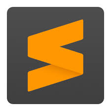
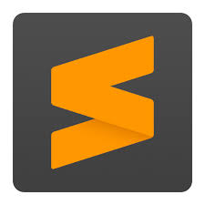
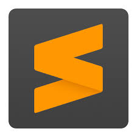
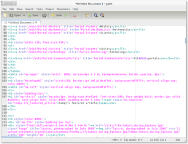
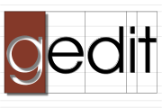

Lower-CASE vahendid keskenduvad teostusele, kus mudelitest saab tegelik tarkvaratoode. Toetavad andmebaasi struktuuri genereerimist, koodi genereerimist, testide lábiviimist, koodi versioonihaldust, konfigurartsioonihaldust, pöördprojekteerimist jms. Naiteks AutoCAD, mida kasutatakse toodete disainimiseks
Isiklikult olen kasutanud naiteks Visual code studiot
Veel eksisteerivad sellised vahendid nagu sublime text ja gedit, mida ma veel kasutanud pole. Nendega saab kirjutada programmeerimiskeeltes.
|
Sublime text

|
| Gedit   |